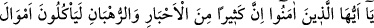

ALTINI VE GÜMÜŞÜ BİRİKTİRİP
ALLAH YOLUNDA HARCAMAYANLAR
34. Ey inananlar! hahamlardan ve rahiplerden birçoğu, insanların mallarını
haksızlıkla yerler ve (insanları) Allah yolundan çevirirler. Altın ve gümüşü
biriktirip de onları Allah yolunda harcamayanlar var ya, işte onlara acıklı bir azabı
müjdele!
35. Bunlar o gün cehennem ateşinde kızdırılır ve onların alınları, yanları ve
sırtları dağlanır: “İşte kendiniz için yığdıklarınız, yığmanızın vebalini tadın!”
(denilir).
“Ey inananlar! Hahamlardan ve rahiplerden bir çoğu …”
“Ahbâr” yâni hahamlar, Hârûn (a.s.) neslinden gelen yahudi âlimleridir. “Ruhbân” ise
“râhib” kelimesinin çoğulu olup manastır ehli hristiyanlara denilir. Bu konuda daha
önce bilgi vermiştik.
“insanların mallarını haksızlıkla yerler.” yani, dînî hükümleri değiştirmek,
hafifletmek ve onlarda müsamaha göstermek karşılığında insanların mallarını rüşvet
yoluyla alırlar. Bunu yaparken de âyeti te’vil etmede ve Allah’ın bu âyetten muradını
beyanda kendilerinin hâzık ve mahir oldukları îmâsını verirler.
Fakir (Bursevî) der ki: Bu zamanın bazı arsız müftüleri ve zalim kadıları da aynı
şekilde davranıyorlar. Fetva soranın malına tamah ederek onun isteği doğrultusunda
fetva veriyor, tercih edilmeyen görüşe göre, hatta şeriatın hilafına hüküm veriyorlar.
Üstelik ellerinde kuvvetli bir dayanak olduğunu iddia ediyorlar.
Âyette rüşvet almak, “yemek” olarak ifade edilmiştir. Halbuki onların kötülenen huyu,
-ister yesinler ister yemesinler- insanların mallarını haksızlıkla, yani rüşvet yoluyla
almalarıdır. Rüşvet almakdan maksat, çoğunlukla alınan şeyi yemek olduğundan âyette
böyle bir ifade kullanılmıştır.
İnsanları “Allah yolundan” İslâm dininden “çevirirler.” men ederler. Ya da
insanların mallarını haksızlıkla yemeleri yüzünden Allah yolundan kendileri yüz